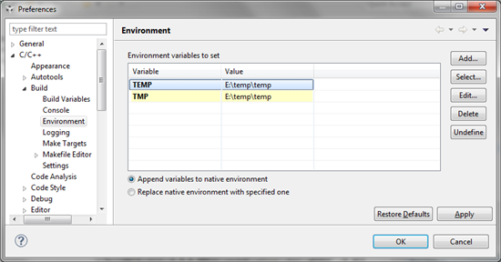
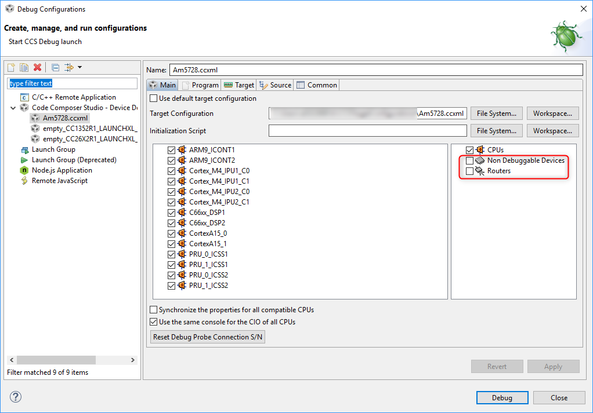
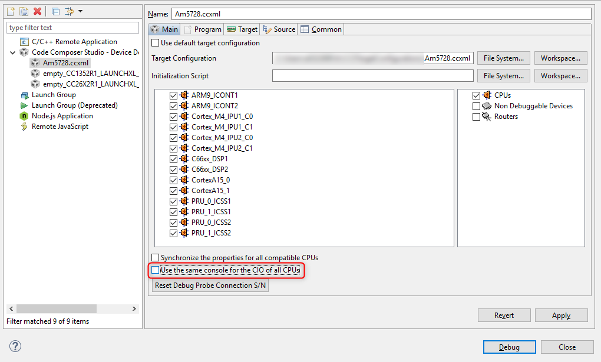

8.1. General¶
8.1.1. Does CCS still support 32-bit Windows systems?¶
The last release to support 32-bit Windows is CCSv8.3.
8.1.2. How can I use my XDS510USB debug probe with CCS?¶
The last release to support the XDS510USB debug probe is CCSv8.3.
8.1.3. Are simulators no longer included with CCS?¶
The last release to support simulation is CCSv5.5.
8.1.4. Are C54x devices supported in CCS?¶
The last release to support C54x is CCSv5.5.
8.1.5. Can I use DSP/BIOS with current releases of CCS?¶
It is still possible to use DSP/BIOS with current releases of CCS and build projects. However, note that DSP/BIOS has been greatly deprecated in support and many advanced features like RTA are no longer available with current CCS versions.
8.1.6. Which operating systems are supported by CCS?¶
Please see the related section in the Overview chapter.
8.1.7. How do I modify the maximum Java heap size for Eclipse?¶
Information on the Heap and Java Virtual Machine (JVM) memory settings can be found in the related section in the Troubleshooting chapter.
8.1.8. Why do I need to avoid non-alphanumeric (unicode) characters in my paths?¶
Paths with non-alphanumeric characters can potentially cause various project management and build issues. In some cases, the build may go fine but clicking the Debug button may not start up the debugger. Or going to Project Properties → Debug may result in error: Error reading Debug Properties. Any of these symptoms could occur when using paths with non-alphanumeric characters.
Examples of non-alphanumeric characters are &, !, (, #, etc. It is recommended to avoid such characters in project names, source/header files/folders, CCS workspace folder names, system temp folder, etc. One exception is the underscore character _, which is normally accepted. A space/whitespace character, while acceptable in most cases, can cause issues with project builds (especially with SYS/BIOS projects) and the GUI Composer runtime. Hence it is recommended to also avoid it.
Note that many CCS files are cached in the user's home folder. The default workspace location is also in the home folder. If the user's username has non-alphanumeric characters, then this would cause issues since the path to there user's home folder is often a folder named the same as the username.
8.1.9. What is the best way to look up a bug?¶
Visit the TI Bug and Enhancement System. Enter the bug ID in the search box on the upper right. If the search fails, please surround the bug ID with "quotes" and try again.
Note that the system TI uses to maintain reports on bugs and enhancements made a transition in early 2020. The identifiers of the newer entries all begin with EXT (ex: EXT_EP-9524). The identifiers of the older entries begin with something else. As of this writing, finding an older entry requires surrounding the identifier with "quotes".
8.2. Installation¶
8.2.1. How do I troubleshoot CCS Installation Errors?¶
CCS installation errors may be caused by a variety of reasons.
- Please review the related section in the Troubleshooting chapter.
- If you are using the web installer, try the offline installer.
- Search the E2E forums if a similar issue has been previously reported.
If the above recommendations do not help resolve the issue, post a new question to the E2E forums.
8.2.2. Can I install multiple versions of CCS on my computer?¶
Yes. Multiple versions of CCS can be installed on the same machine as long as they are installed in different directories. It is also recommend not to share workspaces between different versions of CCS.
8.2.3. What is the difference between the web installer and the offline installer?¶
The web installer is a lightweight installation program. The initial download is very small and enables the selection of features and device support to install. Once the selections are made the installer will then download the appropriate packages to complete the desired selection.
The offline installer, or full installer, is a larger installation program. The download contains all of the available installation options. This installer does not require internet connectivity to run. This installer is recommended if your firewall or anti-virus software is blocking the web installer.
8.2.4. My username has Unicode characters and CCS fails to install. How do I resolve this?¶
Please see this FAQ.
8.2.5. Why does the Linux installer just exit without doing anything?¶
The installer requires some packages to be installed in order to run. You are likely missing one or more of these packages. Please refer to Linux Host Support for more information on installing on Linux.
8.2.6. Why does the Windows installer just exit without doing anything?¶
There is some software that sets up the TCL_LIBRARY environment variable which is interfering with the CCS installer. Please unset this variable temporarily, before trying the install.
8.2.7. After installing on Linux, why does CCS refuse to open?¶
When double-clicking the desktop icon nothing happens, and if launching from a command line, the following error is shown:
user@host:/opt/ti/ccsv6/eclipse$ ./ccstudio Permission denied If this continues, please run fsclean or set TI_APPDATA_DIR to directory you have permissions to access
This may happen when updating or installing a newer version of the same stream of CCS (8.0.0 to 8.1.0, for example). The cause is that, if CCS was previously launched as root, the temporary directory in the user area may have become tainted and its ownership was set to root. In other words, the temporary CCS directory would look similar to:
user@host:~/.ti$ ls -al total 20 drwxr-xr-x 3 root root 4096 Jan 24 2014 . drwxr-xr-x 135 user user 12288 Jan 26 11:25 .. drwxr-xr-x 3 root root 4096 Jan 24 2014 CCSv6 -rw-r--r-- 1 root root 0 Jan 24 2014 .lock
To fix this, use chown to change the ownership of all the directories and the .lock file back to the user
user@host:~/.ti$ sudo chown -hR user:user * .lock
8.2.8. After installing CCS, I found out some features (such as certain processor families or debug probes) are missing. Is there a way to add these features?¶
Yes. Simply re-run the installer executable (either online or offline). Follow the installer screens and select the same directory as the original install. Keep following the installer screens and select the missing components.
Certain features (such as code generation tools updates) can be installed from inside CCS (using menu Help → Install New Software), however this method cannot be used to add support for additional processsor families and debug probes. You would need to re-run the installer to add this support. Check the CCS Updates page for more details.
8.2.9. When installing CCS it says An error occured: can’t read ”update“: no such variable. How do I resolve this?¶
Make sure you are installing CCS to a clean directory where a previous installation does not exist.
8.2.10. When trying to install compiler tools, CCS says it is already installed but it is actually not. How do I fix it?¶
This could happen if a prior attempt at installing the compiler tools did not complete properly. In such cases, the menu Help → Installation Details → Installed Software will list that version of compiler tools as installed, however the files will really not be in the file system and the compiler version will not be in the list of Discovered Tools under menu Window → Preferences → Code Composer Studio → Build → Compilers.
To resolve the issue, look for the compiler installer executable in the folder <ccs_install_dir>/ccsv[x]/eclipse/downloads. It will be named something like ti_cgt_tms470_5.0.11_windows_installer.exe, for example. Run the installer manually as administrator and tell it to install into the <ccs_install_dir>/ccsv[x]/tools/compiler/arm_<version> directory.
8.2.11. How can I perform a silent or unattended installation of CCS?¶
CCS can be installed from command line interface with several options, including unattended installation. Please refer to the CCS Installer Usage article for more details.
8.2.12. Can I install CCS inside C:\Program Files?¶
It is not recommended to install in C:\Program Files since it can block CCS updates. Also, directories with whitespaces can also potentially cause issues in specific cases.
If it is still desired to install inside C:\Program Files, please follow the below steps:
- Install CCS as usual into
C:\ti\ccs<version>. - Navigate to
C:\ti\ccs<version>\ccs\eclipse\plugins\com.ti.ccstudio.base_*\ - In the properties file, change all occurrences of the current path to the new intended path.
- Copy the the entire CCS install folder (
C:\ti\ccs<version>) toC:\Program Files - Only required if xdctools is being used (but you might want to do this anyway to ensure a cleaner install)
- Start
C:\Program Files\ccs<version>\ccs\eclipse\ccstudio.exeas an administrator- Once CCS is running, open the Window → Preferences → Code Composer Studio → Products page
- Press the Refresh button and install/save any changes being proposed
- Allow CCS to restart, and then exit
- From a Windows command prompt (as a user, not administrator), browse to
C:\Program Files\ccs<version>\ccs\eclipse\ccstudio.exeand runccstudio.exe -clean.
Known limitations:
- Autodetect doesn’t work and will prompt with an error message.
- Updating, installing new compilers, etc can potentially require a set of steps derived from the above procedure (IE, running as admin, running
-clean, etc)
8.3. Licensing¶
8.3.1. What is the licensing policy for CCS?¶
There is no license fee associated with CCS. Users are free to download and install Code Composer Studio without having to purchase a license.
For more details on the license, please refer to Licensing chapter.
8.4. Updates¶
8.4.1. How do I get updates to CCS?¶
By default CCS automatically checks for updates each time it starts. This update check will find updates to features that are already installed. For example, it will find updates to the CCS IDE, compiler bug fix release, and device support. It will not find new features including new feature revisions of the compiler. See the CCS Updates page for more details.
8.4.2. How do I search for new features for CCS?¶
The CCS App Center which is accessible from the View menu is useful for finding new features. The App Center will highlight a selection of new features that are relevant to the device families that you have installed.
There are a few other ways to find and install new compiler tools. Refer to the procedures described in the Compiler Updates article.
8.4.3. When installing CCS updates I get a dialog box that warns me that the feature is unsigned. Is this a problem?¶
Most updates released by TI are signed, however not all of them are. Similarly an update or feature from a partner may not be digitally signed. When this happens CCS produces a warning noting that the feature has not been signed. In general these are safe to ignore but it is best to always make sure you know where the update is coming from before installing it.
8.5. General IDE¶
8.5.1. Certain views like the Getting Started view, App Center, Resource Explorer, and Code Analysis views are blank in CCS Linux. How do I fix this?¶
Please see the related section in the Troubleshooting chapter.
8.5.2. Why does moving the mouse in the SysConfig, Resource Explorer, or ROV views cause CCS Linux to flicker rapidly?¶
Please see the related section in the Troubleshooting chapter.
8.5.3. Why is the data for the Inclusive Size column in the Stack Usage view blank?¶
Please see the related section in the Troubleshooting chapter.
8.6. Projects¶
8.6.1. How do I override the TEMP and TMP environment variables that are used to determine where temporary files are placed during CCS build process?¶
During the CCS build process, gmake creates temporary batch files in the directory that corresponds to the user’s TEMP and TMP System Environment Variables. The compiler also uses this directory for temporary files during compilation. CCS has the ability to let the user override these environment variables within the scope of CCS, so you don’t have to modify your global System variables.
In CCS, open the menu Window → Preferences → C/C++ → Build → Environment, and use the Add button to add the two variables:

Set the appropriate button to either “Append” or “Replace” variables to native environment. On Windows, make sure to use backslashes (not forward slashes) in the paths. Also make sure the directory specified for the variables exists before running the build.
8.6.2. Is it possible to convert a non-RTSC CCS project to a RTSC project, and vice-versa?¶
To convert a non-RTSC project to a RTSC project, simply add a RTSC configuration file (.cfg) to the project. CCS will ask if you want to enable RTSC support for the project and if you click Yes, will convert it to a RTSC project.
It is not possible to convert a RTSC project to a non-RTSC project. In this case, you would need to start over by creating a new project.
8.6.3. During project build, a ccsLinker.opt file sometimes gets passed to the linker instead of the list of object files . What is this file and when is it used?¶
The ccsLinker.opt file is generated by CCS and passed to the linker if the list of linker options and input files on the linker command line exceeds the maximum command line length of the host operating system. A project with a large number of object files (.obj) may pass the linker options and input files to the linker via the ccsLinker.opt file rather than directly on the command line.
8.6.4. How can I resolve build error #10234-D: unresolved symbols remain?¶
This article contains more information about the error and how to resolve it.
In summary, the error is generated by the linker when it is unable to find the definition for the symbol. This typically happens if an object file or library containing the definition for the symbol was not provided to the linker. The build output in the CCS build console should provide information on which object files and libraries are passed to the linker.
To resolve the error, locate the source file or library that contains the definition for the symbol and make sure that it is part of the project.
8.6.5. How to resolve Project build error: xdc.cfg.SourceDir : Build of generated source libraries failed: exit status = 2: when building a TI-RTOS based project?¶
A couple of different reasons could trigger this type of error.
Whitespaces or non-ASCII characters in paths referenced by the build tools
This was known to happen with older SYS/BIOS and TI-RTOS versions.
To avoid the error, make sure that all software packages are installed in paths without spaces, and workspace and project names also do not have spaces or non-ASCII characters.
Cygwin related errors
Take a look at the CCS build console for errors prior to the above diagnostic. If the errors are coming from the shell, the problem is likely related to Cygwin (which is supplied with CCS and XDCtools).
The types of shell errors that could occur are:
unable to remap somedll to same address as parent
- couldn't allocate heap
- can't reserve memory for stack
- died waiting for dll loading
- child -1 - died waiting for longjmp before initialization
- child state waiting for longjmp
- STATUS_ACCESS_VIOLATION
- Resource temporarily unavailable
To avoid the error, try the solutions described in this CCS Build errors page.
The Cygwin type of errors may also manifest during the automatic library build step. The same solutions described above should help in this situation as well.
8.6.6. Can I convert an Executable Project to a Library Project?¶
It is still not possible to change the project type from executable to static library.
However, one thing you could do to make it easier to move over the settings is to copy the entire list of options from the existing project and paste them into the new project.
See this E2E forum post for more details.
8.7. Debug¶
8.7.1. I get Data Verification errors when loading my program. What does it mean?¶
See this article on Data Verification Errors
8.7.2. What does the debugger message Can't find a source file at or No source available mean?¶
The message means that the debugger is unable to find the specified source file for source level debug. This is common when the debugger is halted within a library, like the C runtime library, driverlib, etc. The message itself is harmless but please take look at this related section in the Debug chapter for more details about the message and how to avoid it.
8.7.3. What is the difference between Run/Resume and Free Run?¶
Free Run disables breakpoints before executing code on the target. Essentially you are running free of the debugger. You will not see updates to any views or printfs when performing a Free Run.
8.7.4. How can I view non debuggable devices and routers in the Debug view?¶
The Debug view hides non-debuggable devices by default. If you wish to view these devices:
Right-click in the Debug view and select Show All Cores in the context menu. A node called Non Debuggable Devices will appear which you can then expand to see the devices.
You can also set this within a given debug configuration so every time a debug session is launched with that debug configuration (with or without associated project), the settings will take effect. To do this, go to CCS menu Run → Debug Configurations, and enable Non Debuggable Devices and Routers for the desired debug configuration.

8.7.5. In multi-core devices, the CIO console prints out the CPU-core name after every output character. Is there a way to prevent this?¶
In CCS all the CIO output goes to a single console by default, so CCS inserts the CPU-core name in front so that you can tell which core it is coming from. For assert() statements, the CPU-core name is added whenever a given CPU flushes its CIO buffer, making the output very difficult to read.
There is an option to control this. Go to menu Run → Debug Configurations, select your debug configuration and uncheck the option Use the same console for the CIO of all CPUs.

8.7.6. Can I debug two boards using two separate emulators at the same time?¶
Yes, this is possible. See this article for more details: Debugging with Multiple Debug Probes.
8.7.7. When debugging a program in cache, why do cache lines get invalidated?¶
For any kind of action that involves setting software breakpoints (this also includes single-stepping or running to an address) on C6x, the corresponding cache line is invalidated. This is expected behavior since software breakpoints require the breakpoint opcode being written to the program memory at that address.
8.7.9. How do I resolve this error when launching a debug session “Could not fetch next record for SQL statement” and running fsclean does not help.¶
Try deleting the target cache files as described in the Troubleshooting chapter
8.7.10. How do I resolve error Cannot read System Setup data from XML file <file path/name>.ccxml. XML configuration file has no <configurations> root node?¶
Try creating and using a new target configuration file.
8.7.11. Is it possible for the Graphs view and properties to carry over from one CCS session to another, so when CCS is restarted the graphs come up again?¶
CCS saves the arrangement and contents of graph views when a debug session is terminated and restarted, but not when CCS itself is shut down and restarted. The solution to help streamline the input of graphing properties is the Export and Import buttons at the bottom of the graph properties. You could export the graph properties to a file and then import it back when you restart CCS.
8.7.12. How to I resolve these "com/ti/dvt/energytrace" errors when I start up CCS?¶
Please see this related section in the Troubleshooting chapter.
8.7.13. Why isn't printf working when running code in CCS?¶
Two common errors are running out of heap, and running out of stack. For other errors that cause printf to fail, and how to address them, please see the article Tips For Using Printf.
8.7.14. How do I use printf to debug my application running on SimpleLink device?¶
Although printf is one of the first things that comes to mind when you think of debugging an application, it is not the best API to use to debug on embedded devices due to its impact on real-time performance and code footprint size. In SimpleLink SDKs the Display middle-ware driver is the recommended strategy for providing "printf" style debugging. For TI-RTOS applications, System_printf is another option.
Please see the Debugging Output section of the SimpleLink MCU SDK User's Guide for more information. Also refer to the SimpleLink Academy that accompanies your version of SDK. The section on Debug Printing in SimpleLink Academy explores the different options available in the SDK.
Although these documents focus on TI CCS compiler tools, the concepts also are applicable for other toolchains like GCC.
Specifically for the MSP432 SimpleLink SDK, this forum thread shows the steps to get printf working with a no-RTOS gcc example project. Please note that this is intended as a guideline to demonstrate general concepts and these steps alone may not be sufficient for other SDK projects. As noted above, the preferred and recommended strategy is to use the Display module for debugging output.
8.7.15. How can I use System Analyzer/RTOS Analyzer to debug a TI-RTOS (SYS/BIOS) application?¶
See the below presentation that goes into the practical details of logging with TI-RTOS. It shows how to enable logging and debug an exception both when connected to CCS and when not connected (i.e. save log records to non-volatile memory and then import the saved records into CCS):
Debugging TI-RTOS Programs with System Analyzer
Below is the zip that contains example CCS projects that are discussed in the above presentation: